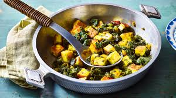

Saag Paneer

Description
An Indian dish with plenty of flavour, saag paneer is a well-loved vegetarian side dish. It's rich in calcium and
folate from the spinach and is gluten-free, too.
Ingredients
- 2 tbsp ghee
- 1 tsp turmeric
- 1 tsp Kashmiri chilli powder
- 450g paneer, cut into 3cm cubes
- 500g spinach, mature fresh or frozen
- 1 large onion, finely chopped
- 3 garlic cloves
- thumb-sized piece of ginger
- 1 green chilli, roughly chopped, (include seeds for extra spice)
- 1 tsp garam masala
- ½ lemon, juiced, to serve
Cooking Steps
- Melt the ghee
- Blitz the onion
- Cook the spinach